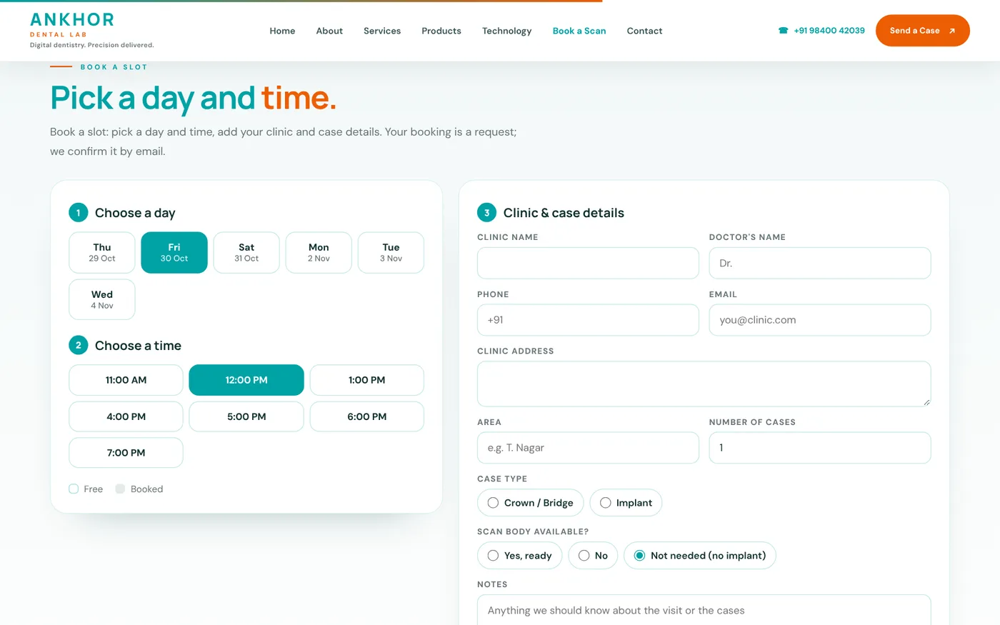

n8n & WhatsApp automation expert
I build automation that removes the repetitive work from your day: bookings that arrive ready to confirm, notifications that go out on their own, and one place to see everything.
01Where automation helps most
If your team copies details from WhatsApp into a spreadsheet, types the same confirmation again and again, or misses enquiries during busy hours, that work can be automated. Your customers keep using WhatsApp and email, the tools they already know.
02What I've built
A WhatsApp booking flow for a dental clinic, where every request reaches the team with the patient's name, number and treatment. And an online scan booking system for a dental lab, with a team dashboard, email and app notifications, and WhatsApp and email confirmations.
03How it works
I map your current process first, then remove steps instead of adding software. Most flows use n8n, WhatsApp, email and a simple dashboard. You get a timeline before we start.
04Case study: WhatsApp bookings for a dental clinic
Akeela Dental Care was getting calls during busy clinic hours and enquiries that were easy to miss. I built a booking form (name, phone, treatment and message) that opens WhatsApp with the request filled in, set up WhatsApp automation for booking enquiries and added call and WhatsApp buttons that stay on screen on mobile. Now every request reaches the team with the patient's details, ready to confirm in one reply.
05Case study: scan and case booking for a dental lab
Ankhor Dental Lab received bookings through calls and scattered WhatsApp messages. I built a Book a Scan flow where clinics pick a free slot and add their case details; the booking is saved, a WhatsApp message is ready to send, the case appears in a team dashboard, and email and app notifications go out automatically. Taken slots show as booked straight away.
06What n8n makes possible
n8n connects the tools you already use. A new form entry can create a row in a sheet, send an email, notify the team, add the lead to a CRM and schedule a follow-up, all without anyone copying and pasting.
07Keeping it simple to run
Automation should make your day easier, not add another tool to manage. I document each flow, keep it close to how your team already works, and make sure someone gets alerted if anything fails.
Step by step
- 01
Map
How enquiries and bookings flow today, and where time is lost or messages get missed.
- 02
Design
The simplest flow that removes those steps, using the tools you already have.
- 03
Build & test
n8n workflows, forms, WhatsApp and email messages, dashboards and notifications.
- 04
Hand over
Documentation, a walkthrough for your team and alerts if a step fails.
- n8n
- WhatsApp Business
- Email automation
- Google Sheets
- Dashboards
- App notifications
Projects that show how

Ankhor Dental Lab – Case Booking & Automation
Online scan and case booking with a team dashboard, email and app notifications, and WhatsApp and email automation.
- n8n
- Email automation

Akeela Dental Care – WhatsApp Booking Automation
Appointment requests that arrive in WhatsApp with the patient's details, ready for the clinic to confirm.
- WhatsApp Business
- n8n
- Booking form
Common questions
What is n8n?
n8n is a workflow automation tool. It connects apps like forms, WhatsApp, email, Google Sheets and CRMs, so that when something happens in one, the next steps happen automatically.
Do I need the WhatsApp Business API?
Not always. Many booking flows work by opening a pre-filled WhatsApp chat. Fully automatic replies need the WhatsApp Business API, which I can help set up.
How long does an automation project take?
It depends on the flow. A booking form that sends requests to WhatsApp is quick; a dashboard with notifications takes longer. You get a timeline before we start.
Which businesses benefit most from automation?
Any business that handles bookings or enquiries every day: clinics, labs, salons, service businesses and online stores. If your team repeats the same messages or copies data by hand, there's something to automate.
Can automation work with my existing website?
Yes. Forms and booking flows can be added to most websites, including WordPress and Wix, and connected to n8n without rebuilding the site.